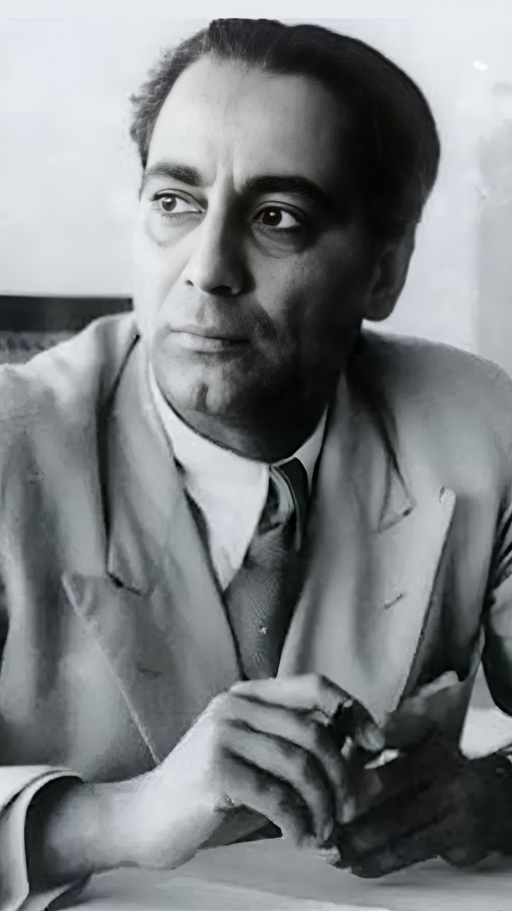

Dr. Homi Jehangir Bhabha, often referred to as the "Father of Indian Nuclear Program," was an exceptional scientist, visionary, and architect of India's nuclear research program. Born on October 30, 1909, in Mumbai, India, Dr. Bhabha's contributions to nuclear physics and his relentless pursuit of scientific excellence have left an indelible mark on India's scientific landscape.
Dr. Bhabha's early education took place in Mumbai, and he later pursued his studies at Cambridge University in the United Kingdom. His keen interest in the field of nuclear physics led him to conduct pioneering research that significantly advanced the understanding of cosmic rays.
One of Dr. Bhabha's most notable contributions was the establishment of the Tata Institute of Fundamental Research (TIFR) in 1945. TIFR served as a cradle for scientific research and became a hub for attracting brilliant minds in various scientific disciplines. Under Dr. Bhabha's leadership, TIFR became a center of excellence, fostering a vibrant scientific community and pioneering cutting-edge research.
Dr. Bhabha's vision extended beyond fundamental research. He recognized the importance of nuclear energy and its potential for transforming India's energy landscape. He played a pivotal role in initiating and shaping India's nuclear program, leading to the establishment of the Atomic Energy Commission of India in 1948. His unwavering commitment to peaceful nuclear applications laid the foundation for India's emergence as a global leader in nuclear technology.
Furthermore, Dr. Bhabha was instrumental in establishing the Bhabha Atomic Research Centre (BARC) in Mumbai, which became a nucleus for nuclear research and development in India. His leadership and scientific acumen paved the way for significant advancements in nuclear technology, including the development of India's first nuclear reactor, Apsara, and subsequent nuclear power plants.
Dr. Bhabha's contributions were not limited to scientific endeavors. He actively supported and promoted the growth of scientific education and research institutions in India. He believed in nurturing young talent and providing them with the necessary resources and opportunities to excel.
Tragically, Dr. Homi J. Bhabha's life was cut short in 1966 when he lost his life in an airplane crash. However, his legacy lives on, inspiring generations of scientists, engineers, and researchers to push the boundaries of knowledge and make significant contributions to the scientific community.
Today, we pay tribute to Dr. Homi J. Bhabha, recognizing his profound impact on India's scientific landscape and his invaluable contributions to the field of nuclear physics. His pioneering spirit, vision, and relentless pursuit of scientific excellence continue to inspire and guide scientists in India and around the world. Dr. Bhabha will forever be remembered as a trailblazer, a visionary, and a true icon of Indian science.

"For, each man can do best and excel in only that thing of which he is passionately fond, in which he believes, as I do, that he has the ability to do it, that he is in fact born and destined to do it…"